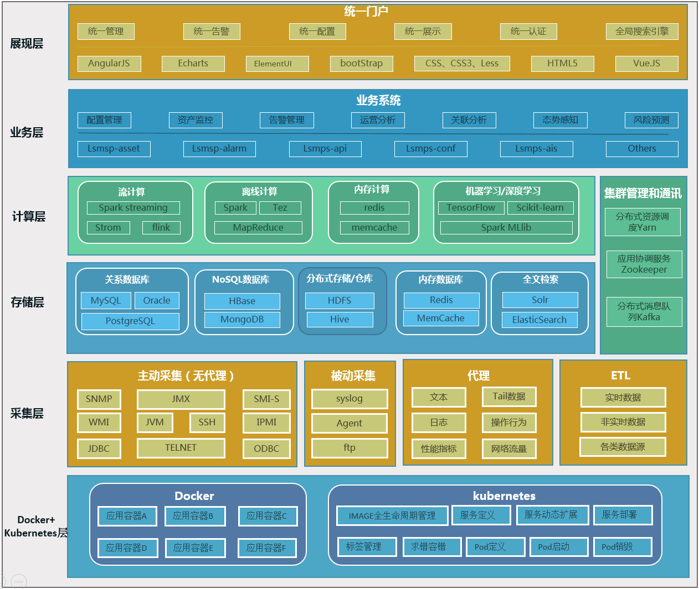

周滔
架构师 / 南京
基本信息
- 周滔 / 男 / 33岁
- 一般
- OSTA高级
联系方式
技能点
二维码

工作经历
个人项目
-
[项目0]集中管控平台 Demo
- 技术栈：springcloud+docker，以Java、Scala、Python、vue、groovy开发语言为主
-
[项目描述]以等保2.0为标准，打造的安全管理与服务解决方案。
 (技术架构图)
(技术架构图)
[团队]22人
[贡献]负责从 “产品需求调研-设计-实现-上线”等工作
[效果]实现产品稳定运行以及自动化运维；打破技术壁垒，实现多语言开发环境
-
[项目1]智能运维云服务平台 Demo
- 技术栈：springcloud+hadoop+spark+storm，以Java、Scala、Python、R、vue、groovy开发语言为主
-
[项目描述]产品由智能采集、接入传输系统、智能云平台、用户管理平台、知识库构成。产品通过智能采集终端系统实现用户信息资产的接入、数据采集与集中管理；通过接入传输系统实现云平台的接入与数据的传输加密；通过智能云平台实现对用户的运营监管、智能分析、自动化响应、远程技术服务；通过用户管理平台实现用户信息化管理、系统状态呈现、用户服务交互、可视化审计，最终实现人工智能。
产品基于公有云版本、私有云版本和混合云版本、采用hadoop生态圈大数据技术、spark、storm流式计算框架。以Java、Scala、Python、R、vue开发语言为主。
技术架构交互层、接入层为微服务架构，数据服务采用大数据。

(技术架构图)
[团队]22人
[贡献]负责从 “产品需求调研-设计-实现-上线”等工作
[效果]实现产品稳定运行以及自动化运维；打破技术壁垒，实现多语言开发环境
-
[项目2]车联网系统 Demo
- 技术栈：springcloud+hadoop+spark+storm，以Java、Scala、vue开发语言为主
-
[项目描述]车辆定位监控系统是利用GPS/北斗二代卫星定位技术、GSM移动通信技术、GIS地理信息技术、移动车载设备和先进的计算机信息管理网络等先进科技，将电力客户的报修信息、车辆调度信息、卫星定位信息等通过GSM网络进行双向传递的管理系统。
该方案符合国网公司车辆管理平台相关技术规范，提供的功能符合电力行业对公务用车、服务用车的实际需求，具有实用性。方案中所采用的技术包括卫星定位技术、移动通信技术、GIS地理信息技术、车联网技术、移动应用技术等，具有先进性。
该方案功能专注于车辆全方位管理，包括：
（1）实时位置管理，监管车辆去向和区域；
（2）约束不规范驾驶行为，提高行驶安全；
（3）减少违规用车，控制成本费用；
（4）日常用车、节假日派车用车管理，避免造成不良影响。
这些功能除可以通过PC实现，还可以通过移动端（手机）实现，系统各级管理者提供及时、有效的管理手段，让他们随时随地、便捷高效的进行车队管理。
主要模块：定位监控、轨迹分析、报警、电子栅栏。
[技术描述]1、数据上传到HDFS中进行处理； 2、使用MapReduce或者impala对HDFS中的原始数据进行清洗； 3、使用Hive对清洗后的数据进行统计分析； 4、使用Sqoop把Hive产生的统计结果导出到oracle中； 5、如果用户需要查看详细数据的话，可以使用HBase进行展现； 该项目主要是基于车辆定位、轨迹分析、调度管理。主要包括后台管理、运行管理、调度管理、报表管理。 项目采用前后分离，单独部署。包括前台服务、总线服务、流程服务、运算服务、地图服务、网关服务。 前台服务主要是给用户提供操作界面以及报表展示。 总线服务、流程服务为前台提供接口服务； 运算服务主要用于计算报表数据； 网关服务主要是把车机采集的数据从外网入到内网数据库。
[团队]18人
[贡献]实现产品 高可用 持续改进产品架构
[效果]满足用户高并发
-
[项目3]江苏省电力企业运行痕迹分析与量化管理支撑系统 Demo
- 技术栈：springMVC+jquery EasyUI+echarts+bootstrap+hadoop
-
[简介]终端采集数据发送到中间件，中间件处理数据发送到云平台，云平台处理完数据上传到ftp。ftp数据经过hadoop处理分析入hive，通过调度平台同步至oracle或者通过impala读取，最后有展示平台展示分析结果。
项目主要模块：
1.终端采集模块；
2.中间件模块；
3.云平台模块；
4.ftp模块；
5.hadoop数据分析模块；
6.展示平台；
展示平台：
1.终端行为总览：展示班组终端开关机、C/S进程数据、B/S应用数据、USB拷贝记录等；
2.终端使用情况分析
1)工作状态：
根据终端开关机记录、bs进程记录、cs进程记录等信息判断终端当天是否处于开机运行状态，统计当天运行计算机和未运行计算机的台数、比例，帮助了解班组人员计算机的使用率。
2)健康水平：
通过终端日重启次数是否过于频繁来判断终端健康水平情况，为终端更换提供数据依据。
3)利用情况：
过对每个终端登陆统一框架的用户情况，了解终端使用情况，是否存在单个终端使用用户过多、终端数量不够，或有终端存在经常闲置、利用率不足等情况。
4)办公情况：
通过对每个班组终端上办公类软件使用时长的统计分析（OFFICE类办公软件、ERP类客户端软件、 B/S类应用系统软件等），进而为衡量班组的组织机构设置是否合理提供参考价值。
3.终端行为轨迹分析
1)业务应用活跃度：
依据终端对业务系统的访问次数和时间，对应用软件的访问时间，分析各个业务系统和应用软件被使用的活跃程度。
2)终端工作情况：
根据班组访问业务系统的次数和时长数据，分析各个班组工作对业务系统的使用频度和依赖程度。根据班组访问应用软件的时长数据，分析各个班组工作对应用软件的使用频度和依赖程度。
3)业务应用趋势预测
查询业务系统在一定周期一定地区内随时间变化的被访问情况。
4)业务应用关联分析
根据班组应用访问顺序，分析各个应用之间同时出现的几率，用于分析各应用之间可能存在的业务关系。根据关联度大小分析关联应用之间可能存在的应用使用缺陷，了解某类型班组办公使用应用存在的重复工作及增加的大量手工工作。
4.终端行为特征分析
1)终端工作行为模式：
通过终端行为进行聚类分析，了解每个类型终端的应用使用习惯。
2)终端突发工作预测
通过终端工作时长信息，获得时长随时间变化的规律和趋势变化模型。
3)企业用户行为轨迹
通过对终端使用业务系统和应用软件进行聚类分析，分析终端办公方式具有的业务特性类别。
5.系统管理与维护
[团队]200人
[贡献]分析项目需求，提供技术方案，使用以hadoop为主的生态圈进行数据分析，和 ECharts 进行图形化展示。
[效果]实现了大数据可视化平台
-
[项目4]国家电网综合管理监控系统IMS3000 Demo
- 技术栈：spring+oracle+ECharts+flex
- 硬件环境：刀片服务器
-
[简介]综合监管、运行监管、应用监管、桌面监管、安全监管、告警监管、运维服务、设备管理、硬件台账录入、软件台账录入、绿色机房、报表管理、容灾专项、系统配置、灾备监管、知识管理
该系统主要是监控各个网省运营、设备情况，数据均有其他系统，比如采集系统或者通过传感器、web接口或者wifi等传入。
[系统架构] 前台Flex由两种方式实现:
1.针对统一元器件，如仪表盘，饼图，柱图，曲线图等组成的画面，其页面布局及展示指标由XML进行配置，由加载器进行加载。方便根据客户需要进行重新排版布局或更换展示指标。
2.针对特殊页面，如一览页面，探测页面等页面，使用直接开发成单独SWF，并嵌入页面展示的方式实现。
3.Flex通过blazeds与JAVA开发的WebService进行交互。
后台JAVA端实现方式：
1.针对统一元器件，实现每种类元器件共通的取数逻辑。
2.针对特殊页面，单独开发与页面对应的后台取数逻辑。
[贡献]持续优化产品架构
[效果]实现版本持续迭代，增强系统稳定性
自我评价
1.本人热爱软件事业，对IT领域的软件开发和设计工作有浓厚的兴趣，能承受较大的工作压力;
2.具有很强的团队精神，有良好的组织、协调和沟通能力，有强烈的集体荣誉感;
3.自学能力强，喜欢钻研新技术，敢于面对和克服困难;
4.有比较强的动手能力，勇于面对困难和挑战，有很好的分析问题与解决问题的能力;
5.工作认真负责，积极上进，能够吃苦耐劳，有良好的职业素质;
6.在日常生活中能与同事融洽相处，对自己的工作认真负责，待人真诚;
7.乐观，自信，善于与人交流，比较合群；务实，有主见;
8.掌握hdfs、Hive、hbase、impla等Hadoop生态技术圈的相关技术的基本使用。
教育经历
-
武汉理工大 - 计算科学与技术
证书
-
OSTA软件工程师证书